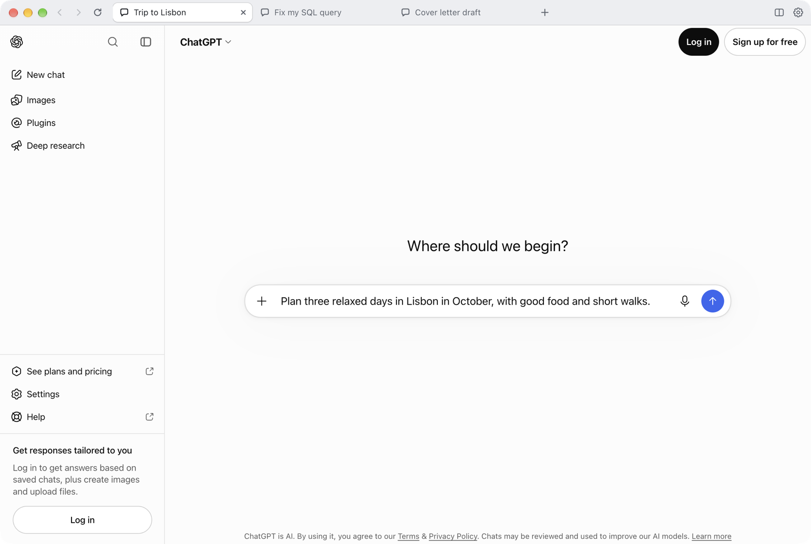
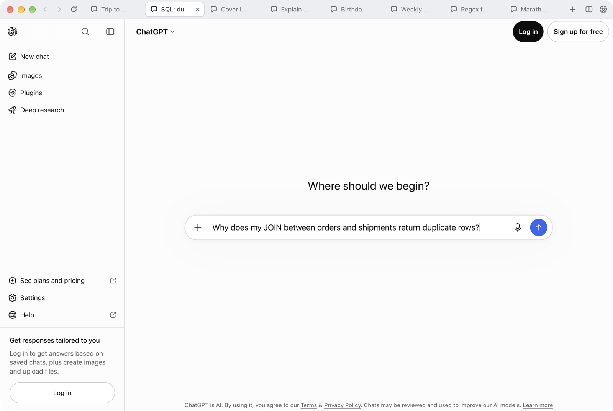
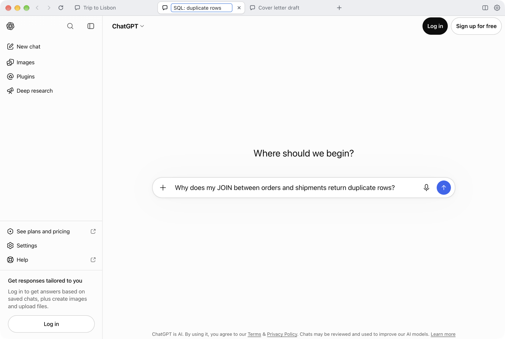
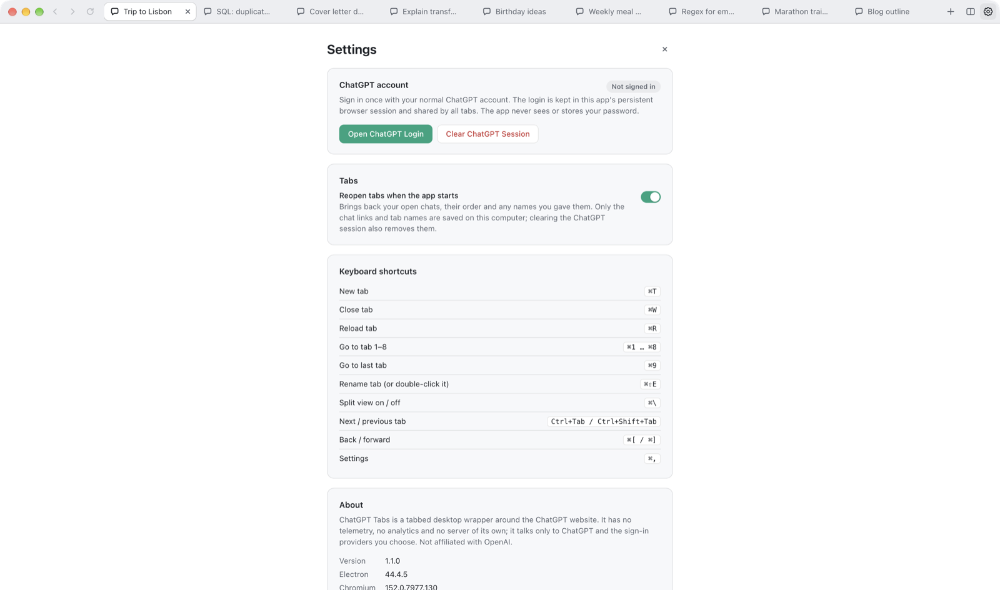
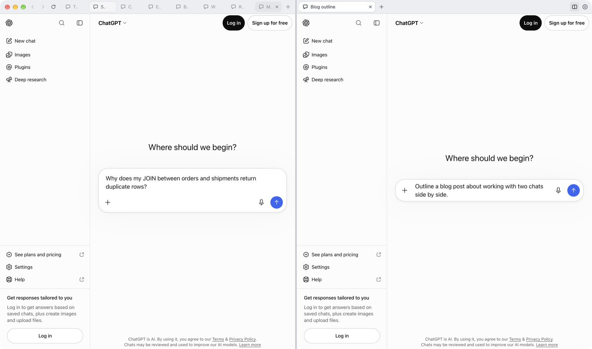
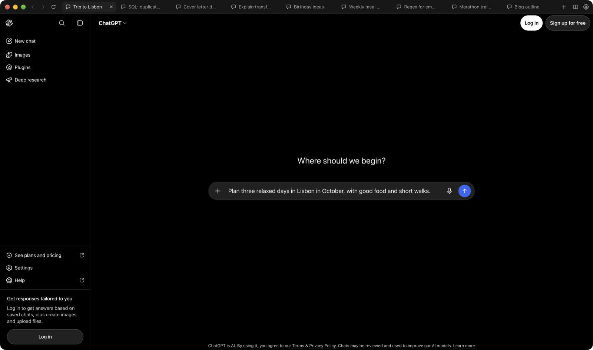

Made for the keyboard.
Open, close, reload and jump between tabs without reaching for the mouse. On Windows, use Ctrl.
Every conversation gets its own tab.

For macOS and Windows. Uses your existing ChatGPT account.
Plan a trip in one tab, debug a query in the next and draft a letter in a third. Every tab is a separate ChatGPT window with its own history, and one sign-in covers them all.

Double-click a tab and call it whatever helps you find it again. Your name stays, even when the chat's own title changes.
Double-click a tab, press ⌘⇧E, or right-click it and choose Rename Tab.

Quit the app, restart your computer, come back tomorrow. Your tabs, their names and their order come back just as you left them.
Tabs in the background load only when you open them, so starting stays quick.

Click the two-column button and work in two columns at once. Each side has its own tabs, so you can compare answers, draft in one and research in the other.

The app follows your system's appearance, and ChatGPT keeps its own theme setting. Light by day, dark by night, without a toggle.

It's the real ChatGPT website, so nothing gets lost in translation.
Open, close, reload and jump between tabs without reaching for the mouse. On Windows, use Ctrl.
Log in the way you always do. Every tab shares the same account.
Drop in files and images, talk to ChatGPT, save what it makes.
Websites ChatGPT links to open in Safari, Chrome or whatever you use.
Chat history, the model picker and settings all work as usual.
No account with us, no tracking, no server of our own. The app talks to ChatGPT and the sign-in service you choose, and nothing else.
You sign in on OpenAI's own page, or Google's, Microsoft's or Apple's. The app only keeps the normal login cookie, encrypted with your system keychain.
Nothing about you or your chats is collected. The app doesn't read your conversations or add anything to the ChatGPT page.
ChatGPT runs in a sandbox with no access to your files or system. The Mac app is signed and notarized by Apple.
Every line is on GitHub, along with the full security model.
Free, for Mac and Windows.
macOS 12 or later. Signed and notarized by Apple.
Download for MacApple chip: mac-arm64.dmg · Intel: mac-x64.dmg
Windows 10 or 11. Installs for your user, no admin rights needed.
Download for WindowsInstaller: win-x64-setup.exe · No install: portable.zip
Downloads come from GitHub Releases, where each version lists SHA-256 checksums. The Windows build isn't code-signed yet, so Windows may ask you to confirm: choose More info, then Run anyway. Want to build it yourself? Here's how.